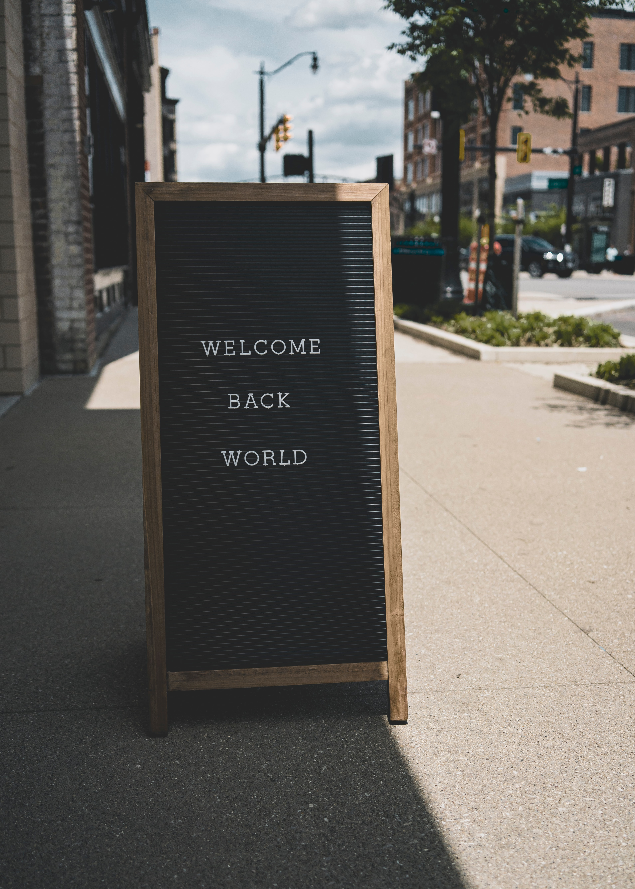

단락태그가 따로 있었네.
단락태그는 한 줄만 바뀐다. 줄바꿈을 많이 하려면
br태그를 많이 쓰면 되지만 p태그는 그렇지 않다.
이미지를 넣을 때는 image태그를 넣어주고 주소를 연결하면 된다.
html태그를 배우기 시작했는데, 먼저 strong부터 알게 됐지. 이건 굵은 글씨로 만드는 태그다.
다음은 밑줄 태그, 제목 태그를-이거 유용하네-를, 그 다음으로는 줄 바꿈 태그, 에잇 줄 바꿈 하지 말고 단락 태그를 써야지. p태그도 배웠어.
그리고는 그걸로도 부족해서 스타일태그를 배웠지. 스타일이라고 쓰고 마진-탑 얼마 하면 줄바꾸는 간격을 조정할 수 있게 돼.
목록 태그도 배우고 있다. 영어 list의 앞 두 글자 li를 쓴다. li태그를 여러 개 넣고 싶으면 ctrl키를 이용하면 된다.
ul이라는 태그도 배웠다. 부모 태그라고 한다. 이건 경계를 설정하는 그룹핑의 개념이다. 부모 태그를 쓰고 넣고 싶은 항목을 넣은 다음 부모태그로 마무리하면 여기서 거기까지가 설정되는 거다.
숫자를 매길 때 쓰는 태그는 ol이라는 태그야. 이건 ul 개념을 포함하면서 숫자를 붙여나가는 태그인가 봐. 한 번 해 볼까.
